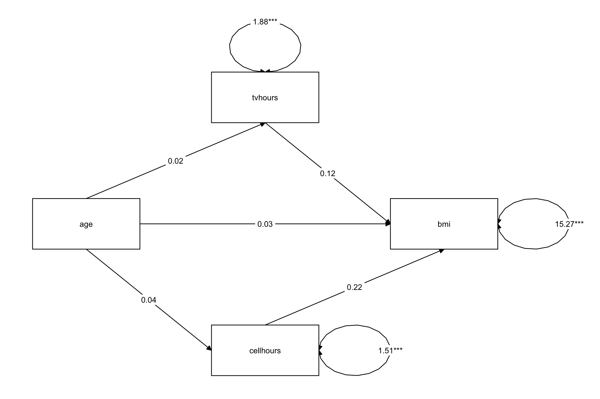

#devtools::install_github("dustinfife/flexplot")
library(tidyverse)
library(lavaanPlot)
library(easystats)
library(lavaan)
library(kableExtra)
library(broom)
library(flextable)
library(flexplot)
library(mediation)
library(JSmediation)
library(processR)
library(MeMoBootR)
library(broom)
options(scipen = 999) # get rid sci notationMediation Analysis in R
Princeton University
Jason Geller, PH.D.(he/him)
2024-04-05
Today
Testing mediation in R
Classical approach to testing mediation (Baron and Kenny)
Joint significance
Sobel
Bootstrapped approach to testing mediation (preferred approach)
Other models:
Multiple mediators
Within-subject mediation
Reporting mediation results
Packages
Is mediation f***ed?
Mediation is a hard causal inference task!
Manipulation of and random assignment of X affords causal inference/causal claims
However, we often do not do the for M
- Mediation analysis requires theory and subsequent experiments to test mediator
Is mediation f***ed?
Julia Rohrer뗩 talk delves into some of these issues
Introduction to DAG analysis
Note
Bullock, J. G., Green, D. P., & Ha, S. E. (2010). Yes, but what뗩 the mechanism? (don뗪 expect an easy answer). Journal of personality and social psychology, 98(4), 550558. https://doi.org/10.1037/a0018933
Mediation: Example
Does study time mediate the relationship between Facebook usage and exam scores?
- Implying that the overuse of Facebook prevents people from studying, so they do differently on their exam


Load packages
Load data
| previous | exam | |
|---|---|---|
| 3 | 3.666667 | 1 |
| 2 | 5.000000 | 1 |
| 1 | 4.000000 | 2 |
| 1 | 4.500000 | 7 |
| 1 | 4.500000 | 6 |
| 1 | 4.500000 | 1 |
Testing Mediation
Causal Steps - Baron & Kenny (1986)
- Mediation is tested through three regression models:
- Predicting the outcome from the predictor variable
- X -> Y
- c path : total effect
Predicting the mediator from the predictor variable
X -> M
a path
Predicting the outcome from both the predictor variable and the mediator
X+M뇣
b path
c (c-prime) path: direct effect
Mediation Paths

| Paths | |
|---|---|
| c: 랎otal effect of X on Y | Total effect = direct effect + indirect effect |
| a x b = 랄ndirect effect of X on Y (our mediation effect) | indirect effect = total effect - direct effect |
| \(c^\prime\) = 띿irect effect of X on Y |
Why take the product of the two coefficients?
An intuitive explanation:
A 1 unit increase in M corresponds to a b unit increase in Y holding X constant
How much does X change M?
- a
So if a = 1/2, X changes M by 1/2, which then changes Y by b, the indirect effect is (1/2) × b
Causal Steps - Baron & Kenny (1986)
Traditionally, to show mediation ALL these conditions must be met:
X must significantly predict Y in Step 1
X must significantly predict M in Step 2
M must significantly predict Y controlling for X in Step 3
The effect of X on Y must be reduced in Step 4
If X is no longer significant, you have 랁ull mediation
If X is still significant, then you have 랋artial mediation
- Not really used in anymore
Mediation: c path
| Parameter | Coefficient | SE | CI | CI_low | CI_high | t | df_error | p |
|---|---|---|---|---|---|---|---|---|
| (Intercept) | 4.5679439 | 0.5389142 | 0.95 | 3.5062701 | 5.6296178 | 8.476199 | 237 | 0.0000000 |
| -0.6611852 | 0.1280633 | 0.95 | -0.9134729 | -0.4088974 | -5.162956 | 237 | 0.0000005 |
The c path (total effect): X > Y:
\(b = -0.66, t(237) = -5.16, 95\% CI[-0.91, -0.41], p < .001\)
Mediation: a path
| Parameter | Coefficient | SE | CI | CI_low | CI_high | t | df_error | p |
|---|---|---|---|---|---|---|---|---|
| (Intercept) | 2.4466495 | 0.4095586 | 0.95 | 1.6398092 | 3.2534899 | 5.973869 | 237 | 0.0000000 |
| -0.2108046 | 0.0973243 | 0.95 | -0.4025358 | -0.0190734 | -2.166002 | 237 | 0.0313087 |
The a path: X > M:
\(b = -0.21, t(237) = -2.16, 95\% CI[-0.40, -0.02], p = .031\)
Mediation: b, c path
- Add in the b (M > Y) and c (direct) paths: X + M > Y
| Parameter | Coefficient | SE | CI | CI_low | CI_high | t | df_error | p |
|---|---|---|---|---|---|---|---|---|
| (Intercept) | 3.9329387 | 0.5679094 | 0.95 | 2.8141192 | 5.0517583 | 6.925292 | 236 | 0.0000000 |
| -0.6064728 | 0.1270523 | 0.95 | -0.8567744 | -0.3561712 | -4.773409 | 236 | 0.0000032 | |
| previous | 0.2595407 | 0.0839713 | 0.95 | 0.0941117 | 0.4249697 | 3.090828 | 236 | 0.0022357 |
c Path: \(b = -0.61, t(237) = -4.77, 95\% CI[-0.86, -0.36], p < .001\)
b Path: \(b = 0.26, t(237) = 3.09, 95\% CI[0.09, 0.42], p = .002\)
Mediation: interpretation
Facebook usage negatively impacts exam scores (c path = -.66)
Facebook usage negatively impacts previous study time (a path = -.21)
Controlling for Facebook time, previous study time positively impacts exam scores (b path = .26)
Controlling for previous study time, Facebook usage negatively impacts exam scores (c path = -0.61)
- Do we have mediation here?
Issues with causal steps
- Indirect effect is inferred rather than directly estimated
- Failure to meet a criterion results in game over!
- If total effect (path c) is not statistically significant, game does not begin
Joint significance test
An edited version of causal steps approach
If a path and b path are significant
- Mediation!
Some issues:
Indirect effect is inferred rather than directly estimated
Failure to meet a criterion results in game over!
Testing mediation: Sobel test
So, did mediation happen? Is a change from 0.66 to 0.61 important?
The Sobel Test:
\[Z = \frac{a \times b}{\sqrt{b^2 \times SE_a^2 + a^2 \times SE_b^2}}\]
- If the indirect effect is larger than the error, we would conclude that the addition of the M variable changed the c path
Sobel Test
Sobel test
Sobel Aroian Goodman
z.value -1.77380460 -1.71464047 -1.83954863
p.value 0.07609548 0.08641116 0.06583453Z = -1.77, p = .08
- We would conclude that no mediation had occurred
Note
Other tests listed use slightly different denominator formula
Sobel test
Serious problems!
Assumes indirect effect is normally distributed
- Not always the case
Mediation: Bootstrapping
Testing significance of indirect effect (a x b)
- Does not assume distribution is normal
- More sensitive test = Higher power!
Mediation: Bootstrapping
What it is:
- A computer based method for deriving the probability distribution for any random variable
When to use it:
- You do not know the distribution of your variable(s)
How to do it:
- Run your analysis a bunch of times with a slightly different set of observations each time
Bootstrap: Overview
- Take a random sample of size n from the sample with replacement
- Estimate the indirect effect in this resample
- Repeat (1) and (2) a total of k times, where k is at least 1,000. The larger k, the better. I recommend at least 10,000
- Use distribution of the indirect effect over multiple resamples as an approximation of the sampling distribution of the indirect effect
The Bootstrapped CI
Using the bootstrap sample we can calculate 95% CI
Percentile bootstrap
- Find the 2.5th and 97.5th percentiles of the distribution of the statistic
If 0 is included, no mediation
Note
Variations exist (e.g., 딱ias corrected or 딱ias-corrected and accelerated confidence intervals but they do not perform as well as percentile.)
Mediation: All together + bootstrapping
Do it all with one function
The MeMoBootR package (developed by Erin Buchanon) gives you data screening, each step of the mediation, and the bootstrapping results!
- The data screening does not include accuracy or missing data, so that should be completed first


Assumptions

Mediation: MeMoBootR
For each of our stages of mediation, you can print out the models:
| Parameter | Coefficient | SE | CI | CI_low | CI_high | t | df_error | p |
|---|---|---|---|---|---|---|---|---|
| (Intercept) | 3.9329387 | 0.5679094 | 0.95 | 2.8141192 | 5.0517583 | 6.925292 | 236 | 0.0000000 |
| -0.6064728 | 0.1270523 | 0.95 | -0.8567744 | -0.3561712 | -4.773409 | 236 | 0.0000032 | |
| previous | 0.2595407 | 0.0839713 | 0.95 | 0.0941117 | 0.4249697 | 3.090828 | 236 | 0.0022357 |
Mediation: MeMoBootR
- Next, you can get the Sobel test results:
Bootstrapping
- Last, let뗩 get the bootstrapped results:
ORDINARY NONPARAMETRIC BOOTSTRAP
Call:
boot(data = finaldata, statistic = indirectmed, R = nboot, formula2 = allformulas$eq2,
formula3 = allformulas$eq3, x = x, med.var = m)
Bootstrap Statistics :
original bias std. error
t1* -0.05471237 -0.002351216 0.03876614The indirect effect would be reported as: b = 0.05, 95% CI[-0.147, -0.001]
Returns several type of cis
Bootstrapping
- Percentile bootstrap
Mediation visualization

Note
No good programs to create nice looking path models
Mediation visualization
JSmediation
Incorporates
easystats
JSmediation results
Test of mediation (simple mediation)
==============================================
Variables:
- IV: facebook
- DV: exam
- M: previous
Paths:
==== ============== ===== =======================
Path Point estimate SE APA
==== ============== ===== =======================
a -0.211 0.097 t(237) = 2.17, p = .031
b 0.260 0.084 t(236) = 3.09, p = .002
c -0.661 0.128 t(237) = 5.16, p < .001
c' -0.606 0.127 t(236) = 4.77, p < .001
==== ============== ===== =======================
Indirect effect index:
Indirect effect index is not computed by default.
Please use add_index() to compute it.
Fitted models:
- X -> Y
- X -> M
- X + M -> Y JSmediation: Indirect effect
# Testing Indirect Effect with `JSmediation`
model_fit_with_index <- add_index(mediation_fit)
model_fit_with_indexTest of mediation (simple mediation)
==============================================
Variables:
- IV: facebook
- DV: exam
- M: previous
Paths:
==== ============== ===== =======================
Path Point estimate SE APA
==== ============== ===== =======================
a -0.211 0.097 t(237) = 2.17, p = .031
b 0.260 0.084 t(236) = 3.09, p = .002
c -0.661 0.128 t(237) = 5.16, p < .001
c' -0.606 0.127 t(236) = 4.77, p < .001
==== ============== ===== =======================
Indirect effect index:
- type: Indirect effect
- point estimate: -0.0547
- confidence interval:
- method: Monte Carlo (5000 iterations)
- level: 0.05
- CI: [-0.131; -0.00328]
Fitted models:
- X -> Y
- X -> M
- X + M -> Y JSmediation results: Assumptions
complex mediation models

Multiple mediator model
Test the influence of multiple mediator
Specific indirect effect
X -> M_1 -> Y
X -> M_2 -> Y
Total indirect effect
- Overall influence of mediators
Can example which one has a stronger influence

Multiple mediators: Example
Lavaan
Similar to popular MPlus software, but free!
~regression;*labels;:=define variables
library(lavaan)
multipleMediation <- '
bmi ~ b1 * tvhours + b2 * cellhours + cp * age
tvhours ~ a1 * age
cellhours ~ a2 * age
# Fit indirect 1
indirect1 := a1 * b1
# Fit indirect 2
indirect2 := a2 * b2
# total
total := cp + (a1 * b1) + (a2 * b2)
total_indirect := (a1 * b1) + (a2 * b2)
#test if size of med are different
med_diff := indirect1 - indirect2
#prob mediated
##prop_indirect1
prop_med_1 := indirect1 / (indirect1+cp)
##prop_indirect2
prop_med_2 := indirect2 / (indirect2+cp)
prop_med := total_indirect /(total_indirect+cp)
'
fit <- sem(model = multipleMediation, data = weight_behavior, se = "bootstrap", bootstrap = 500)Lavaan summary
lavaan 0.6.17 ended normally after 8 iterations
Estimator ML
Optimization method NLMINB
Number of model parameters 8
Number of observations 543
Model Test User Model:
Test statistic 44.446
Degrees of freedom 1
P-value (Chi-square) 0.000
Parameter Estimates:
Standard errors Bootstrap
Number of requested bootstrap draws 500
Number of successful bootstrap draws 500
Regressions:
Estimate Std.Err z-value P(>|z|) ci.lower ci.upper
bmi ~
tvhours (b1) 0.120 0.133 0.898 0.369 -0.130 0.388
cellhours (b2) 0.217 0.133 1.631 0.103 -0.038 0.479
age (cp) 0.026 0.124 0.207 0.836 -0.272 0.218
tvhours ~
age (a1) 0.017 0.047 0.367 0.714 -0.077 0.132
cellhours ~
age (a2) 0.041 0.067 0.616 0.538 -0.035 0.225
Variances:
Estimate Std.Err z-value P(>|z|) ci.lower ci.upper
.bmi 15.273 1.602 9.535 0.000 11.812 18.542
.tvhours 1.883 0.077 24.569 0.000 1.727 2.028
.cellhours 1.512 0.085 17.722 0.000 1.340 1.663
R-Square:
Estimate
bmi 0.007
tvhours 0.000
cellhours 0.002
Defined Parameters:
Estimate Std.Err z-value P(>|z|) ci.lower ci.upper
indirect1 0.002 0.009 0.223 0.824 -0.016 0.023
indirect2 0.009 0.019 0.458 0.647 -0.010 0.066
total 0.037 0.118 0.310 0.757 -0.241 0.223
total_indirect 0.011 0.021 0.512 0.609 -0.014 0.073
med_diff -0.007 0.022 -0.316 0.752 -0.070 0.021
prop_med_1 0.074 0.579 0.128 0.898 -0.534 0.734
prop_med_2 0.257 1.723 0.149 0.881 -1.853 1.788
prop_med 0.299 26.997 0.011 0.991 -1.746 2.433Lavaan summary
semoutputhttps://dr-jt.github.io/semoutput/
| Regression Paths | |||||||||
| Predictor | DV | Unstandardized | Standardized | ||||||
|---|---|---|---|---|---|---|---|---|---|
| b | 95% CI | 95% CI | sig | SE | z | p | |||
| age | bmi | 0.026 | 0.272 0.218 | 0.008 | 0.069 0.085 | 0.039 | 0.207 | 0.836 | |
| cellhours | bmi | 0.217 | 0.038 0.479 | 0.068 | 0.014 0.151 | 0.042 | 1.616 | 0.106 | |
| tvhours | bmi | 0.120 | 0.130 0.388 | 0.042 | 0.049 0.132 | 0.046 | 0.907 | 0.365 | |
| age | cellhours | 0.041 | 0.035 0.225 | 0.041 | 0.090 0.173 | 0.067 | 0.618 | 0.537 | |
| a1*b1 | indirect1 | 0.002 | 0.016 0.023 | 0.001 | 0.003 0.004 | 0.002 | 0.343 | 0.732 | |
| a2*b2 | indirect2 | 0.009 | 0.010 0.066 | 0.003 | 0.007 0.013 | 0.005 | 0.569 | 0.569 | |
| indirect1-indirect2 | med_diff | 0.007 | 0.070 0.021 | 0.002 | 0.013 0.008 | 0.005 | 0.403 | 0.687 | |
| total_indirect/(total_indirect+cp) | prop_med | 0.299 | 1.746 2.433 | 0.299 | 1.964 2.562 | 1.155 | 0.259 | 0.796 | |
| indirect1/(indirect1+cp) | prop_med_1 | 0.074 | 0.534 0.734 | 0.074 | 0.667 0.815 | 0.378 | 0.196 | 0.844 | |
| indirect2/(indirect2+cp) | prop_med_2 | 0.257 | 1.853 1.788 | 0.257 | 1.882 2.396 | 1.091 | 0.236 | 0.814 | |
| cp+(a1*b1)+(a2*b2) | total | 0.037 | 0.241 0.223 | 0.012 | 0.063 0.086 | 0.038 | 0.307 | 0.759 | |
| (a1*b1)+(a2*b2) | total_indirect | 0.011 | 0.014 0.073 | 0.003 | 0.007 0.014 | 0.005 | 0.662 | 0.508 | |
| age | tvhours | 0.017 | 0.077 0.132 | 0.016 | 0.068 0.099 | 0.043 | 0.366 | 0.714 | |
| * p < .05; ** p < .01; *** p < .001 | |||||||||
Lavaan Visualization
Lavaan Practice
- Fit our simple facebook mediation model using Lavaan
Lavaan Practice
- Same results as before
| Regression Paths | |||||||||
| Predictor | DV | Unstandardized | Standardized | ||||||
|---|---|---|---|---|---|---|---|---|---|
| b | 95% CI | 95% CI | sig | SE | z | p | |||
| exam | 0.606 | 0.906 0.339 | 0.292 | 0.398 0.186 | *** | 0.054 | 5.385 | <0.001 | |
| previous | exam | 0.260 | 0.057 0.506 | 0.189 | 0.038 0.340 | * | 0.077 | 2.449 | 0.014 |
| a*b | indirect | 0.055 | 0.152 0.003 | 0.026 | 0.058 0.006 | 0.016 | 1.614 | 0.106 | |
| previous | 0.211 | 0.421 0.006 | 0.139 | 0.279 0.000 | 0.071 | 1.954 | 0.051 | ||
| cp+(a*b) | total | 0.661 | 0.975 0.380 | 0.318 | 0.424 0.212 | *** | 0.054 | 5.856 | <0.001 |
| * p < .05; ** p < .01; *** p < .001 | |||||||||
Within-participant mediation
Mediation when X is a within-subject variable
Dohle and Siegrist (2014, Exp 1)
Interested in the effect of name complexity on buying drugs
- The specific hypothesis is that complex drug names are perceived as more hazardous, which makes someone less likely to buy the drug
Within-participant mediation
\[ Y_{2i} - Y_{1i} = c_{11} \]
with \(Y2_i\)\(Y1_i\) the difference score between DV conditions for the outcome variable for the ith observation
\[ M_{2i}-M_{1i} = a_{21} \]
with \(M_{2i}\)\(M1_{1i}귶) the difference score between DV conditions for the mediator variable for the ith observation,
\[Y_{2i} - Y_{1i} = c'_{31} + b_{32}(M_{2i} - M_{1i}) + d_{33}[0.5(M_{1i} + M_{2i}) - 0.5(\overline{M_{1} + M_{2}})]\]
Where we have the mediator diff and mean_diff
Within-participant mediation
Note
- Montoya, A. K., & Hayes, A. F. (2017). Two-condition within-participant statistical mediation analysis: A path-analytic framework. Psychological Methods, 22(1), 6-27. doi: 10.1037/met0000086
Within-participant indirect effect
Test of mediation (within-participant_mediation)
==============================================
Variables:
- IV: name (difference: simple - complex)
- DV: willingness
- M: hazardousness
Paths:
==== ============== ===== ======================
Path Point estimate SE APA
==== ============== ===== ======================
a -0.800 0.258 t(21) = 3.10, p = .005
b -0.598 0.113 t(19) = 5.29, p < .001
c 0.564 0.193 t(21) = 2.92, p = .008
c' 0.085 0.158 t(19) = 0.54, p = .596
==== ============== ===== ======================
Indirect effect index:
- type: Within-participant indirect effect
- point estimate: 0.479
- confidence interval:
- method: Monte Carlo (5000 iterations)
- level: 0.05
- CI: [0.157; 0.872]
Fitted models:
- 1 -> DV_diff
- 1 -> M_diff
- 1 + M_diff + M_mean -> DV_diff Summary: Mediation
What it is: A method for testing hypotheses about why and how x predicts y
When you use it:
Whenever you would start using words like 락ecause in your introduction section
Whether there is a basic relationship between x and y or not
Best approach*:
- Bootstrapping
Write-up: Simple mediation
a, b paths
Direct effect (c)
Total effect (c)
Indirect effect
How did you test indirect effect
- Sobel test or Bootstrapping (# bootstrapped samples)
Proprotion mediated
Figure of path diagram
- Create in PPT 😱
- Use DiagrammeR
Write up: Multiple mediators
Include all indirect effects
Total indirect effect
Proportion mediated
Resources
Wednesday and next week
- Mediation lab
- path modeling/SEM (Renata and Brooke)
PSY 504: Advanced Statistics